Installing Kora on Reclaim Cloud
This guide is for installing Kora in a Reclaim Cloud environment.
Set up Scalable Cloud Environment
-
After creating an account, begin from your Dashboard. Select "Create New Environment" in the middle:
Or "NEW ENVIRONMENT" in the top-left:
-
In the modal that appears, Select PHP Tab. It will look like this:
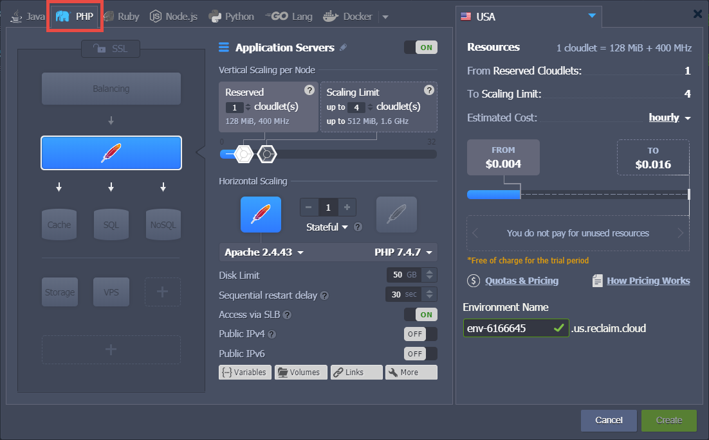
-
Turn on SSL by clicking "SSL" in left panel area, then toggling the switch at the top of the middle panel to "On".

-
Return to the Apache Layer view by clicking on it, which is the blue block with a red feather in the middle.
Leave Apache layer as-is; Click on "SQL" layer under it to add MySQL Layer. Use the dropdown on this block to change from MariaDB to MySQL SE 8.0.20.

-
While still viewing the settings for the Apache layer, in middle panel area, use the PHP dropdown menu to change to version 7.2.32.
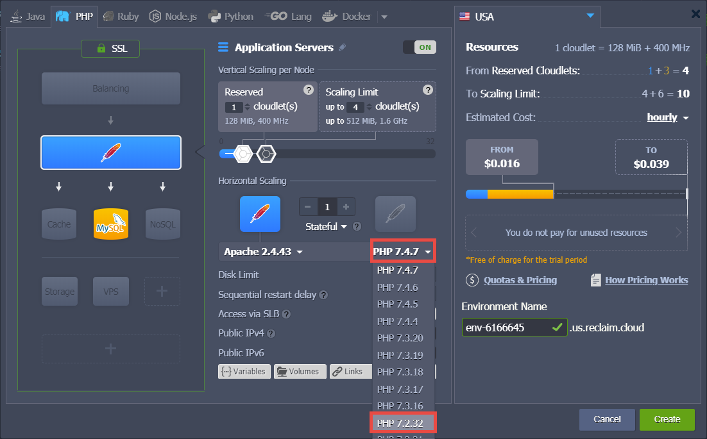
In the same area area, use slider for "Application Servers" to set Scaling Limit to at least 8 cloudlets, which will set the max reserve to at least Kora's minimum RAM requirement of 1 GB. The reserve can be set higher than this, if desired; doing so will allow your environment to use more CPU and/or RAM if your installation requires it at some future time. You will only be charged for higher processing power if your Kora website has enough people using it simultaneously to require the extra resources.
Leave the reserved level on 1 cloudlet.
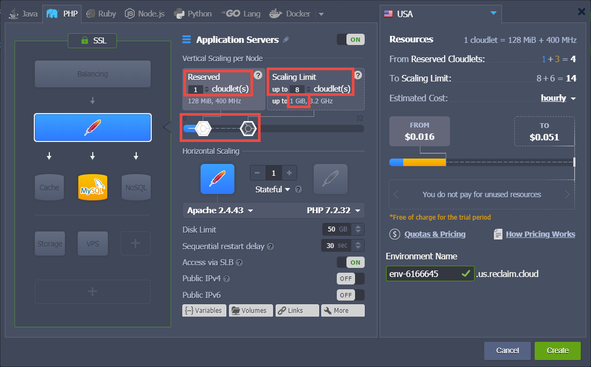
-
Click on "SQL" block to adjust the MySQL Layer settings. In middle panel area, use slider for "Application Servers" to set Scaling Limit to at least 8 cloudlets, which will set the max reserve to at least Kora's minimum RAM requirement of 1 GB. Either leave the reserved level at its default of 3 cloudlets, or drop it to 1 cloudlet.
To note once again, the reserve can be set higher than this, if desired; doing so will allow your environment to use more CPU and/or RAM if your installation requires it at some future time. You will only be charged for higher processing power if your Kora website has enough people using it simultaneously to require the extra resources.
The minimum settings would look like this:
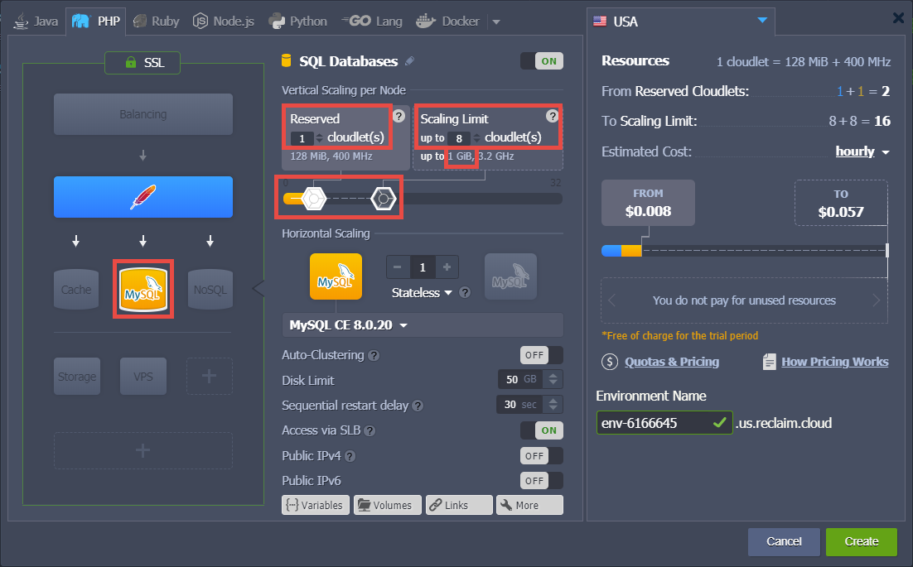
-
Feel free to review all these settings again, but you can always adjust these later if needed (see the section, "Alter Cloud Environment After Creation" below). When ready, click "Create" in lower-right to initialize the environment.
Set up MySQL Database
-
After the environment initializes, you'll receive emails. One, with subject similar to "New Reclaim Cloud Environment... Created" lets you know the process has completed. Other email, with subject similar to "MySQL Node Successfully Added to Your Reclaim Cloud Environment," contains important login information for MySQL. Do not delete this email without first saving the host, username, and password contained within.
In your dashboard, your newly initialized environment's components will be visible. There will be a notification on the right-hand side informing you that this process has completed. you can hover on that notification to make the "X" visible, then click on it to dismiss this notification.
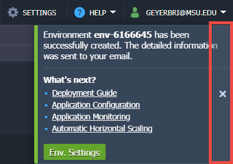
-
Hover over the "Node" contained within "SQL Databases" and click icon for "Open in Browser".
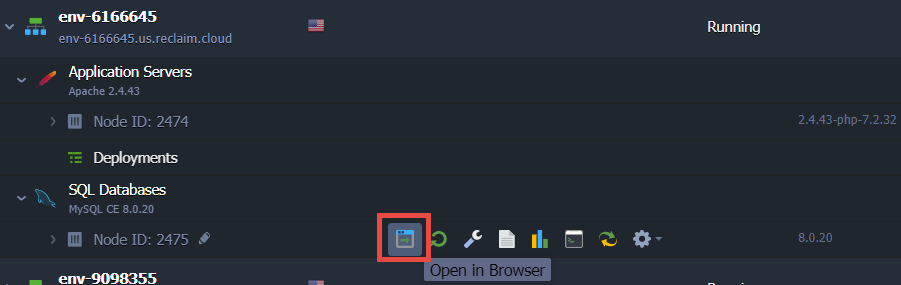
-
This will open a new tab with a phpMyAdmin login screen.

Use credentials from the MySQL email to log into phpMyAdmin; the username is commonly root.
-
Once logged in, the main dashboard will load.

Click the tab for "User Accounts" in the top menu, highlighted in the screenshot above. This will bring up the list of existing users.

-
Click on "Add user account" (highlighted in the previous screenshot) to reach the page for adding new database users.

-
In "User name" field, write kora. Leave the "Host name" defaulted to the "Any host" dropdown selection and the default text field content. For the password, click the "Generate" button for "Generate password." This will populate both password text boxes and provide a plain-text display of the generated password. Copy this password somewhere safe as you will need it when setting up Kora. Finally, check the box for "Create database with same name and grant all privileges."

-
Scroll to bottom and click "Go" button in lower-right.
-
Close this browser tab and return to the main Reclaim Cloud tab.
Configure PHP Modules
-
In the dashboard, hover over "Application Servers" and click on the wrench icon, for "Config."

This will bring up a panel at the bottom of the window, with a tab labeled "Application Servers : Configs".

-
On left-hand side of this panel, scroll down and select "php.ini." The file will load on the right-hand side, as a new tab labeled "php.ini."

-
Use the built-in "Search" function to locate each of these modules:
gd,imagick,imap,intl,ldap,pgsql(NOT "pdo_pgsql"),snmp,soap,wddx,xmlrpc,xslEach of their code blocks will look similar to this one, for
gd:
Some modules will have more lines in their block than others. For instance,
imagickhas a comment line with the url where the module is found, the line for enabling the extension, and then two lines for configuring the module.[imagick] ; http://php.net/manual/en/book.imagick.php ;extension=imagick.so imagick.locale_fix = 0 ; Fixes a drawing bug with locales that use ',' as float separators imagick.progress_monitor = 0 ; Used to enable the image progress monitorIn this case, enable
imagickby removing the;from the line;extension=imagick.soso that the section looks like:[imagick] ; http://php.net/manual/en/book.imagick.php extension=imagick.so imagick.locale_fix = 0 ; Fixes a drawing bug with locales that use ',' as float separators imagick.progress_monitor = 0 ; Used to enable the image progress monitorDo this for all 11 of the listed modules. For
wddx, remove the#which is there instead of;. -
Enable the mail function. Search for "smtp" to find the section that begins with:
[mail] ;SMTP = {mail host} ;port = {port-number}The first two lines of this module defines the server location and the port. The full code of this section is not reproduced here and portions have been changed, for security purposes. Remove the
;from the beginning of each of these two lines, and write down the specified value forSMTP =. This will be used when setting up the email function in Kora. -
Once you have enabled all the modules and the mail configurations, Click "Save" at the top of this panel area.
-
After saving, hover on "Application Servers" and click on the icon for "Restart Nodes."

Click "Yes" for the warning for "Restart Apache nodes?" Wait for the notification indicating that the nodes have been successfully restarted.
-
Next, hover on "Application Servers" and click on the icon for "Open in Browser"
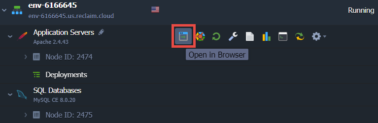
New tab will open with a page displaying information generated by the function
phpinfo(). The top of it will look like this:
You can use this page to confirm that all eleven of these modules have been loaded; those that are loaded have their own section headings. If any are not loaded, return to the php.ini file to confirm you properly deleted the semi-colon from the
extension=...line that corresponds to the module in question. -
When finished, close this browser tab.
Import and Install Kora, with Site URL Considerations
There are two paths for importing Kora into your Reclaim Cloud environment. There are also two basic forms your Kora website's URL can take. To demonstrate both options for both of these, this section is split into two subsections, to highlight the two different versions of each. If you wish to "mix-and-match" these processes, this should be a fairly straightforward adjustment to make.
Installation via Zipped File as a URL Subdirectory
When creating your new Kora website, you have two basic options for how your URL will be configured. This first option is for instances where your installation will be accessible at, as an example, https://example.org/subdirectory. The subdirectory in this example URL is appropriately named "subdirectory."
-
Back at the dashboard, hover on "Application Servers" and click on icon for "Web SSH"

-
Display will open with an SSH terminal
-
Use the following command to navigate to the directory just above your environment's Document Root (contents of Document Root is what's visible via your environment's URL)
cd /var/www/webrootYou can either type this code in, or copy it and then paste it into the terminal using a keyboard shortcut. Your terminal will look like this:
-
Open a new browser tab and navigate to https://github.com/matrix-msu/kora/releases. Click the dropdown menu for "Assets" of most recent release. Right-click on the "Source Code (zip)" file link and copy this file's URL.
-
Return to the Reclaim Cloud environment tab. Type
wgetthen a space, then paste the file URL you just copied. This is an example of what your command will look like after pasting:wget https://github.com/matrix-msu/kora/archive/3.0.0.zip -
Hit "Enter" and let the command run. During the file transfer process, your terminal will look similar to this:
The file will be named the last part of the URL where you fetched it from. In this example, the name is
3.0.0.zip. If needed, you can run the commandlsto view a list of the directory's contents. The newly-added zip file should be listed. -
Run the following command to unzip this file into this directory. Make sure to change the filename in the command to match the one that is listed.
unzip 3.0.0.zipThe system will create a new directory with the contents of this zip in a directory "kora-[zip-file-name]". In this example, the directory is named "kora-3.0.0"; if needed, you can again use
lsto confirm the directory's name. You can also see the name of the directory at the beginning of each line that displays after running theunzipcommand: -
Use the move command to rename the directory as "kora". Be sure to use the exact directory name that displayed. An example of this command is:
mv kora-3.0.0 koraFor the
mvcommand, the first part is the name of the current directory/file, and the second part is the desired name to change it to. If you wish, runlsonce again to confirm the name change -
Use the following command to change your location to the "kora" directory:
cd koraAfter the
mvandcdcommands, your terminal will look similar to this: -
Use the copy command
cpto make a new copy of the ".env.example" file, but with the name ".env" This command looks like:cp .env.example .envWhen
cpis successful, there won't be a message; the terminal will simply create a new line with the command prompt. So your terminal will look like this: -
Use the
nanofile editing program built into this version of Linux to make changes to the .env file. The command is:nano .envThis file will look similar to this when displayed by
nano:
You can navigate around this file by using the directional arrows on your keyboard. Locate the block of lines that say:
DB_HOST=localhost DB_DATABASE=kora DB_USERNAME=kora DB_PASSWORD=kora DB_DEFAULT=mysql DB_PREFIX=kora_ -
For the
DB_HOST=line, change "localhost" to the "host" you saved from the MySQL email. Pasting the host requires a nano-specific keyboard shortcut; for Windows machines this is ctrl + shift + vIf you used "kora" for the user you set up in phpMyAdmin, and you checked the "Create database with same name and grant all privileges" box when creating it, leave the
DB_DATABASE=andDB_USERNAME=lines alone; otherwise, change them to match the username and database names you created in phpMyAdmin.On the
DB_PASSWORD=line, change "kora" to the password you saved from the process of creating the user in phpMyAdmin. Again, use the nano-specific keyboard shortcut for pasting, if copied from elsewhere.(You can see how this file will appear after editing in the screenshot below, in Step 15.)
-
Leave the rest of this file alone. Use the proper keyboard shortcut for exiting nano on your computer; for a Windows machine, this is crtl + x. The system will ask you if you wish to save your changes; hit "y" for yes. Then hit "enter" to confirm that the file name is ".env"
-
Now, change your directory to public:
cd public -
Copy the ".htaccess.example" file in this directory using the
cpcommand, as ".htaccess"cp .htaccess.example .htaccessAfter you have done this, your terminal will look similar to this:
-
Next, edit this file, again using
nanonano .htaccessFind the following section of code in this file:
RewriteEngine On #RewriteBase #add base url ex: www.website.com[/this part is your base url, the url subdirectory where you want your installation to be accessible from] #RewriteBase /your_base_urlIt is also highlighted in this image:

From the final line of this section of code, remove
#and then change "/your_base_url" to "/kora". This tells the system that your Kora install's url will be https://example.org/kora (if your subdirectory is something different, change this line accordingly) -
Save this file using the same process as explained in the case of editing ".env" above. Leave the file name as ".htaccess".
-
Navigate upward to the main kora directory:
cd ..Run the following command to install Kora
php artisan kora:installThis will install Kora into your environment by completing a number of tasks, such as linking the mySQL database you created to these application files.
-
Once this finishes, your terminal will look similar to this:
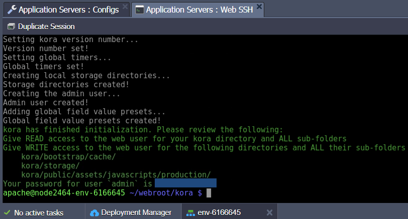
INCREDIBLY IMPORTANT: You must copy the last line generated here in the successful installation message (outlined above), which has your password for the generated username of "admin". Paste this somewhere safe, where you will not lose it!
Warning
It cannot be stressed enough how important this step is, because losing this password means losing access to your installation and will require a full reinstallation.
-
Reclaim Cloud has default permissions levels that will automatically meet the READ and WRITE permissions requirements for the specified folders in the successful installation message, so for this installation you will not need to change any permission levels. You may skip this step and proceed to #21.
If using this guide to install into any other environments, you may need to change permission levels. You can use the following commands to do so:
chmod -R 755 .chmod -R 775 bootstrap/cache/chmod -R 775 storage/chmod -R 775 public/assets/javascripts/production/ -
Navigate to your RootDirectory, which is the directory that your server points your URL at; in this case, use the following two commands:
cd ..cd ROOT -
Create a symbolic link in this directory, that corresponds to the path you wrote in the .htaccess file before. For example, if you changed "/your_base_url" to "/kora", use this command for your symbolic link creation:
ln -s ../kora/public koraOnce you have run this command, your terminal will look similar to this:
At this point you may skip the next sub-section and proceed to the next section, "Further Configure Kora Once Installed."
Installation via GitHub Repository and Cloud's Development Manager
The second option for configuring your webpage's URL is to have it accessible at a main-level domain (or, technically in the case of the Reclaim Cloud-provided URLS, subdomain). Auto-generated Reclaim Cloud URLs are usually in the form of https://[environment-name].us.reclaim.cloud. In this example, your Kora installation would be accessible at this URL, without an additional subdirectory on the end. (For an explanation of the subdirectory URL case, please see the previous sub-section, "Installation via Zipped File as a URL Subdirectory.")
-
In the dashboard, hover on the line "Deployments" for your environment, and click on "Deploy from Git / SVN."
-
This will open a new modal, for configuring a repository from which to pull files.
Click on the dropdown menu for "Repository" and choose "Add New Repository."
-
Another new modal will open, for adding a new repository. In this modal, give this configuration a name; for instance "Kora," since this will be pointed at the official Kora repository managed by Matrix at MSU. Point it at this repository by pasting in the following address into the "URL" text box:
https://github.com/matrix-msu/koraLeave the "Branch" text box with its default "master" text. The modal should look similar to this:
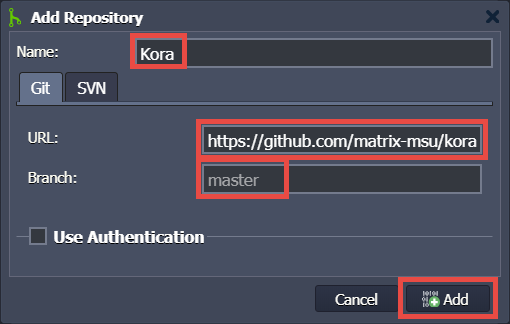
-
Click "Add" on this modal (highlighted above), which will return you to the previous modal with "Kora" selected for the "Repository." Again leave "Branch" text as defaulted to "master"; additionally, also leave the "Path" text box with its "ROOT" default. Click "Deploy" in the lower-right to have the Development Manager transfer all of the files from the kora repository on GitHub into your environment's ROOT folder.
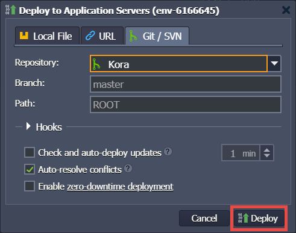
-
Currently, your ROOT folder is set as your URL's DocumentRoot, but this would be quite insecure for your Kora application, so this must be changed. To do so, once again hover over "Application Servers" and again click on wrench icon for "Config."
This will bring up the "Application Servers : Configs" tab in the bottom panel.
-
In the left-hand pane of this panel, click on the "conf" folder.
This will show its contents in the right-hand pane. Double-click on the file, "httpd.conf"

-
Search this file for "DocumentRoot," which should find four matches. The first two, shown in the image below, are in a section where DocumentRoot is defined as a directory tree leading to "ROOT"
Change this line by adding "/public", to read as follows:
DocumentRoot "/var/www/webroot/ROOT/public" -
The next match when searching for DocumentRoot will be the comment above a line of code that reads,
<Directory "/var/www/webroot/ROOT">Add "/public" to this line as well, so that it reads,
<Directory "/var/www/webroot/ROOT/public"> -
The final match for "DocumentRoot" in this file will be in the middle of a code block that reads,
ServerAdmin webmaster@domain.com DocumentRoot /var/www/webroot/ROOT ServerName website.jelastic.com ServerAlias * ErrorLog logs/dummy-host.jelastic.com-error_log CustomLog logs/dummy-host.jelastic.com-access_log common </VirtualHost>It is the second line here, beginning with "DocumentRoot," that will need to be altered. As you may have guessed, you will add "/public" to this line as well. It will read,
DocumentRoot /var/www/webroot/ROOT/public -
Once these changes have been made, click on "Save," and then hover on "Application Servers" and click on the icon for "Restart Nodes."
-
After your nodes restart, hover on "Application Servers" again and click on icon for "Web SSH"
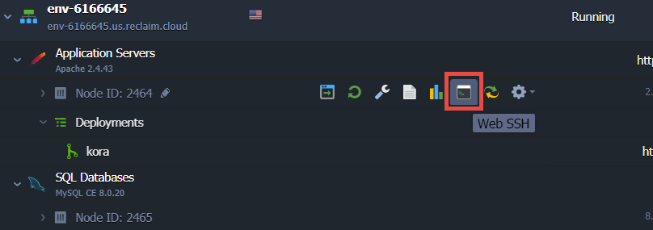
-
The panel at the bottom will open a new tab with an SSH terminal.
-
Use the following command to navigate to the directory where the Development Manager has transferred all the kora repository files to:
cd /var/www/webroot/ROOTYour terminal will look like this:

-
Use the copy command
cpto make a new copy of the ".env.example" file, but with the name ".env" This command looks like:cp .env.example .envWhen
cpis successful, there won't be a message; the terminal will simply create a new line with the command prompt. So your terminal will look like this:
-
Use the
nanofile editing program built into this version of Linux to make changes to the .env file. The command is:nano .envThis file will look similar to this when displayed by
nano:You can navigate around this file by using the directional arrows on your keyboard. Locate the block of lines that say:
DB_HOST=localhost DB_DATABASE=kora DB_USERNAME=kora DB_PASSWORD=kora DB_DEFAULT=mysql DB_PREFIX=kora_ -
For the
DB_HOST=line, change "localhost" to the "host" you saved from the MySQL email. Pasting the host requires a nano-specific keyboard shortcut; for Windows machines this is ctrl + shift + vIf you used "kora" for the user you set up in phpMyAdmin, and you checked the "Create database with same name and grant all privileges" box when creating it, leave the
DB_DATABASE=andDB_USERNAME=lines alone; otherwise, change them to match the username and database names you created in phpMyAdmin.On the
DB_PASSWORD=line, change "kora" to the password you saved from the process of creating the user in phpMyAdmin. Again, use the nano-specific keyboard shortcut for pasting, if copied from elsewhere.(You can see how this file will appear after editing in the screenshot below, in Step 19.)
-
Leave the rest of this file alone. Use the proper keyboard shortcut for exiting nano on your computer; for a Windows machine, this is crtl + x. The system will ask you if you wish to save your changes; hit "y" for yes. Then hit "enter" to confirm that the file name is ".env"
-
Now, change your directory to public:
cd public -
Copy the ".htaccess.example" file in this directory using the
cpcommand, as ".htaccess"cp .htaccess.example .htaccessAfter you have done this, your terminal will look similar to this:
-
Next, edit this file, again using
nanonano .htaccessFind the following section of code in this file:
RewriteEngine On #RewriteBase #add base url ex: www.website.com[/this part is your base url, the url subdirectory where you want your installation to be accessible from] #RewriteBase /your_base_urlIt is also highlighted in this image:
From the final line of this section of code, remove
#and then change "/your_base_url" to "/kora". This tells the system that your Kora install's url will be https://example.org/kora (if your subdirectory is something different, change this line accordingly) -
Save this file using the same process as explained in the case of editing ".env" above. Leave the file name as "".htaccess".
-
Navigate upward to the main kora directory:
cd ..Run the following command to install Kora
php artisan kora:installThis will install Kora into your environment by completing a number of tasks, such as linking the mySQL database you created to these application files.
-
Once this finishes, your terminal will look similar to this:
INCREDIBLY IMPORTANT: You must copy the last line generated here in the successful installation message (outlined above), which has your password for the generated username of "admin". Paste this somewhere safe, where you will not lose it!
Warning
It cannot be stressed enough how important this step is, because losing this password means losing access to your installation and will require a full reinstallation.
-
Reclaim Cloud has default permissions levels that will automatically meet the READ and WRITE permissions requirements for the specified folders in the successful installation message, so for this installation you will not need to change any permission levels. You may skip this step and proceed to the next section.
If using this guide to install into any other environments, you may need to change permission levels. You can use the following commands to do so:
chmod -R 755 .chmod -R 775 bootstrap/cache/chmod -R 775 storage/chmod -R 775 public/assets/javascripts/production/
Confirm Kora Installation
Once finished with either of the subsections in the previous section of this guide, your Kora installation should be properly configured and now accessible via your browser. Hover on "Application Servers" as you have done previously and select "Open in Browser".
- If you set up Kora with a subdirectory URL, the phpinfo() page you previously visited in Step 7 of the section, "Set up MySQL Database" will again open. Add "/kora" to the URL and load this page, which should be the Kora login screen.
If you successfully reached the Kora login page, Congratulations! Your install is at least partially working!
-
The last required step to complete the work done via terminal is to delete the "index.php" file saved in your website's ROOT folder. This file should be deleted because it contains quite a bit of sensitive information, which would make your Kora website vulnerable.
There is an easy command to reset your terminal prompt location back to where it begins, to the location it is whenever you open up terminal:
cd ~Once reset to the starting location, use this command to again reach the "ROOT" folder:
cd /var/www/webroot/ROOT -
Once in "ROOT", use the remove command
rmto delete the file:rm index.php
Further Configure Kora Once Installed
-
Back in the browser tab where the Kora login page loaded, log in using "admin" as the username and the password from the installation success message, which you previously saved. You will land on a page that looks like this:

-
It is highly recommended that you at some point click through the introduction to get a quick tutorial on the basics of using Kora. Once done, click on the menu icon in the top-right to bring out the side-bar menu.

Then click on "Management" at the bottom and select "Kora Configuration File" from the options that appear.

The page that loads will look similar to this:

Configure reCAPTCHA
Note
Because this subsection regards setting up an external service, there are no screenshots provided.
Kora currently uses reCAPTCHA v2 Checkbox
-
Kora uses Google's reCAPTCHA service for anti-robot protections. As you can see on the screenshot above, the configuration file is asking for a "Recaptcha Private Key" and "Recaptcha Public Key", which you will get from that service. The reCAPTCHA documentation can be found at https://developers.google.com/recaptcha, but to create the keys needed for your site, you will go to https://www.google.com/u/0/recaptcha/admin/. Google will ask you to log in with a Gmail account. Many academic institutions have contracts with Google for using their tools via an educational arrangement; in the case of MSU, it is possible to give Google's login page an MSU email address, which then redirects to an MSU-related login page. Successfully logging in redirects back to reCAPTCHA under the MSU account. If this option is not available to you, unfortunately you will need a Gmail account to gain access to reCAPTCHA, which is required for completing Kora's installation setup.
-
Once logged in, if this is your first time using reCAPTCHA, it will automatically go to the registration page. However, if you have used reCAPTCHA before, it will take you to a page displaying the information for the first reCAPTCHA key set you created. To create a new set of keys, click on the plus icon in the upper-right to register a new site.
Give your new set any label you prefer (a suggestion would be to use your Kora installation URL). As noted above, Kora currently uses reCAPTCHA v2 "I'm not a robot" Checkbox version, so pick those options. Under "Domains", write your main domain (do not include "http://", "https://", or the subdirectory) and either hit Enter or click the plus sign to add it to the list of approved domains for the set of keys that are about to be generated. As an aside: this functionality means you could conceivably have multiple Kora installations, or even multiple sites that use reCAPTCHA v2 Checkbox, all using the same keys.
-
The "Owners" section should auto-add your account email, but you can add another if you wish. Be sure to (review and) accept the Terms of Service. The final option is the checkbox for "Send alerts to owners", which you may wish to leave enabled so that you receive emailed updates when security issues with your site arise.
-
Finally, click "Submit". Once redirected back to the main page, the lighter-blue bar at the top will display the number of sites registered and have a dropdown list for you to select whichever. Obviously if this is the first time setting one up, you will only have one. Ensure the one you intend to use is selected in the dropdown and then click on the gear icon in the upper right to go to the reCAPTCHA "Settings" page. Click on the "reCAPTCHA keys" dropdown list to display your site and secret keys.
-
Copy the "site key" and paste it into your Kora Configuration File page text box titled "Recaptcha Public Key"; copy the "secret key" and paste it into the text box titled "Recaptcha Private Key". If you want to ensure this information is saved before setting up your email, scroll to the bottom of the page and click "Update Configuration File".
GitLab Integration
If desired, your Kora installation can use GitLab's authentication system to manage account creation and user login. For more information about this, including integration instruction, please see the section of "Advanced Configuration" called, "GitLab Integration."
Configure Kora Email
-
For the Mail configuration settings on the "Kora Configuration File" page, provide the value from the "SMTP = " in the "Mail Host" text box. You should have saved this information back in Step 4 of "Configure PHP Modules." More than likely though, the value saved will match the default value already on this page.
-
Next, type in an address that you would like the email to appear from in the "Mail From Address" text box. This can technically be anything you wish, but it is good practice for the portion after the @ symbol to match your Kora installation's main url. For example, if your installation is accessible at the url https://env-0000000.us.reclaim.cloud/kora, you could set this email address to "kora-admin@env-0000000.us.reclaim.cloud".
-
Set the "Mail From Name" to whatever you prefer, such as your own name, some name that references your specific version of Kora, or even a generic "Kora Administrator".
-
Leave "Mail User" and "Mail Password" with their default settings in Kora.
-
Click "Update Configuration File" at the bottom of the page.
Admin User Profile Settings
The final portion of configuration is for the admin account's profile settings. This section is specific to what is a part of the initial configuration for Kora, but this documentation website also has a more complete guide for user profile settings.
-
To get there to the profile settings page, select the user icon in the upper-right.

Then choose "Edit My Profile."

-
On this page, you can change the username and password that were auto-generated when installing Kora, however it is probably best to leave these alone. However, it is important to change the default admin email here because it is shown to users at various locations throughout Kora. It should be changed to an address which is often checked; unless you will be doing more with the SMTP server you have set up as a part of this guide, this means it should not be set to the "Mail From Address" used on the "Kora Configuration File" page.
You can also change the displayed admin name, if you wish, as it is also displayed to users in various locations. Finally, should you wish to change the admin account password from what was auto-generated to one you prefer, you can do that here.
-
Once all these have been set, click "Update Profile" to complete your setup.
Testing the Installation
To check whether or not your installation works properly:
-
Create a Form in that project.
-
Create a Field in that project with the field type set to one of the File types (setting it to "Documents" will give the greatest flexibility for uploading any file to test).
-
And finally, create a Record where you upload an example file.
If the creation of that Record with an uploaded file succeeds, such that the uploaded file is viewable or downloadable when clicked upon, everything should be configured properly. If this fails, please check that you have properly enabled all the PHP modules noted in Step 3 of "Configure PHP Modules," and properly set the permission levels described in either Step 20 of "Installation via Zipped File as a URL Subdirectory," or Step 24 of "Installation via GitHub Repository and Cloud's Development Manager."
Alter Cloud Environment After creation
In some cases, it may be necessary for you to adjust the environment into which you've installed Kora. For instance, if you find your Kora website is quite popular and needs more RAM, CPU, or Storage than you original configured, you can alter the environment.
Hover on the environment and click on the icon for "Change Environment Topology":
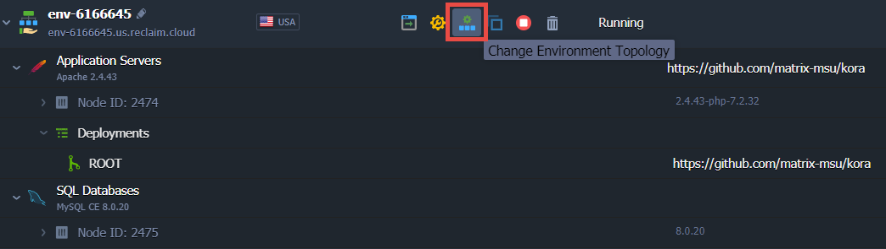
The environment configuration modal will open, where you can make the necessary adjustments. For instance, you can increase the Scaling Limits for either your Apache/PHP layer or MySQL layer. You can also increase the disk limit of either. The disk limit setting is highlighted in this screenshot:
If increasing disk size, be sure to adjust the size on the Apache/PHP layer, as this is the one that corresponds to your Kora installation files; the disk limit on your MySQL layer corresponds to the database itself and is unlikely to need an adjustment upward from its default.